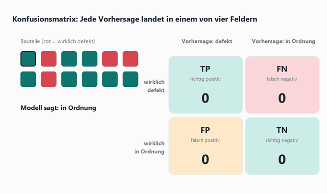
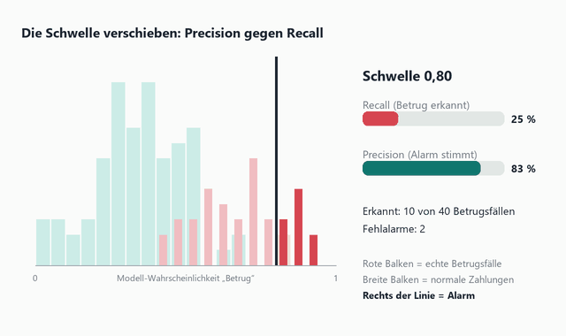
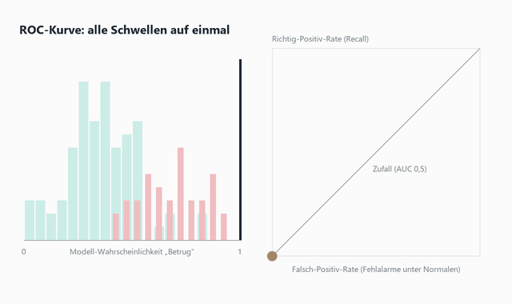
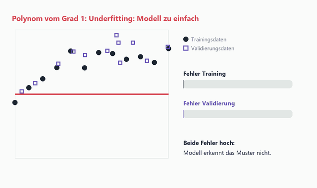
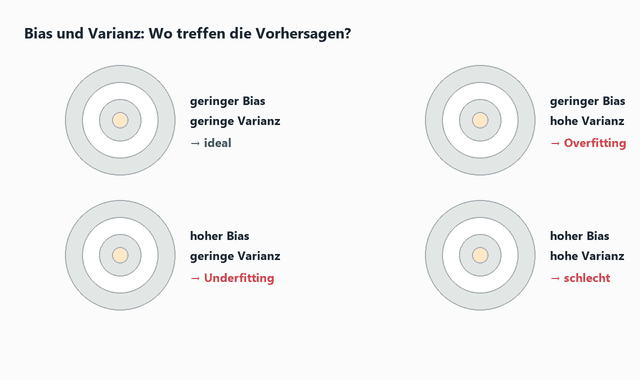
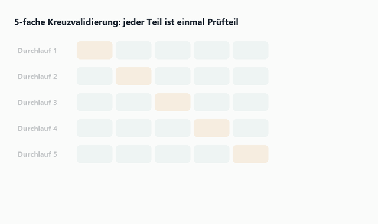

Ist das Modell gut? Ehrlich messen, richtig deuten, Überanpassung vermeiden
Ein Modell, das niemand ehrlich geprüft hat, ist ein Risiko. In diesem Modul lernen Sie alle Kennzahlen, die in der Prüfung vorkommen: Konfusionsmatrix, Accuracy, Precision, Recall, F1, ROC und AUC für Klassifikation sowie MAE, MSE, RMSE und R² für Regression. Sie lernen, Over- und Underfitting zu erkennen, mit Regularisierung gegenzusteuern und Modelle per Kreuzvalidierung fair zu vergleichen. Dieses Modul kommt in fast jeder Prüfung vor.
Klassifikation bewerten
Warum ehrlich messen?
Ein Wetterdienst, der in der Wüste jeden Tag „Sonne“ vorhersagt, liegt zu 99 % richtig – und ist trotzdem nutzlos, weil er den einen Regentag verpasst, auf den es ankommt. Eine einzige Zahl kann täuschen. Gute Bewertung fragt: Welche Fehler macht das Modell, und was kosten sie?
- Auf Daten bewerten, die das Modell nie gesehen hat (Validierung, Test).
- Mit einer Baseline vergleichen.
- Die Kennzahl passend zum Geschäftsziel wählen.
Technisch: Recall 0,82. Fachlich: „Wir finden 82 % der Defekte, das spart 140.000 € im Jahr.“ Die Prüfung erwartet beides – und dass Sie das eine in das andere übersetzen können.
Weitere Beispiele: Warum eine einzige Zahl täuschen kann
Ein Schnelltest wird bei 10.000 Personen eingesetzt, von denen 1 % erkrankt sind (100 Personen). Er erkennt 95 % der Kranken und gibt bei 10 % der Gesunden fälschlich Alarm.
- Kranke und erkannt: 95, übersehen: 5.
- Gesunde mit Fehlalarm: 10 % von 9.900 = 990, richtig unauffällig: 8.910.
- Accuracy: (95 + 8.910) : 10.000 = 90,05 % – klingt gut.
- Aber: Von 1.085 Positiven sind nur 95 : 1.085 ≈ 8,8 % wirklich krank.
Eine Zahl (Accuracy) sagt „90 % richtig“, eine andere (Precision) „nur jeder zwölfte Alarm ist berechtigt“. Welche zählt, hängt vom Ziel ab.
Ein Qualitätsmodell hat einen Recall von 0,82. Das Werk hat im Jahr etwa 150 Defekte, jeder verursacht ohne Entdeckung 1.000 € Folgekosten. Übersetzung: 150 · 0,82 = 123 Defekte werden erkannt, 123 · 1.000 € = 123.000 € Folgekosten werden vermieden; 27 Defekte rutschen weiter durch. Für die Entscheidung der Geschäftsführung ist die Zahl in Euro verständlicher als „0,82“.
- Ungesehene Daten: Das Modell wird mit den Testdaten geprüft, die beim Training nicht vorkamen.
- Baseline: „Immer kein Defekt“ erreicht 98 %; das Modell mit 98,4 % ist kaum besser – der Vergleich zeigt: Die Accuracy ist hier das falsche Maß.
- Passende Kennzahl: Recall, weil ein übersehener Defekt 1.000 €, ein Fehlalarm nur 20 € kostet.
Frage (5 Punkte): Nennen Sie drei Grundregeln der ehrlichen Modellbewertung.
Musterlösung: Auf Daten bewerten, die das Modell nie gesehen hat (Validierung/Test) (2 Punkte); mit einer Baseline vergleichen (1 Punkt); die Kennzahl passend zum Geschäftsziel und den Kosten der Fehler wählen (2 Punkte).
Eine Kennzahl ist nur so gut wie ihre Passung zum Ziel. Immer auf ungesehenen Daten, immer gegen eine Baseline.
Die Konfusionsmatrix: vier Arten, richtig oder falsch zu liegen
Ein Rauchmelder kann viermal reagieren: Es brennt und er piept (gut). Es brennt und er schweigt (gefährlich). Es brennt nicht und er piept (lästig). Es brennt nicht und er schweigt (gut). Diese vier Fälle sind die Konfusionsmatrix.

| Vorhersage: positiv | Vorhersage: negativ | |
|---|---|---|
| Wirklich positiv | TP – richtig positiv (Treffer) | FN – falsch negativ (übersehen, Fehler 2. Art) |
| Wirklich negativ | FP – falsch positiv (Fehlalarm, Fehler 1. Art) | TN – richtig negativ |
Der zweite Buchstabe (P/N) sagt, was das Modell vorhergesagt hat. Der erste (T/F) sagt, ob das stimmt. FN = „sagte negativ, und das war falsch“ – also ein übersehener Fall.
Was „positiv“ ist, muss man festlegen – meist die seltene, gesuchte Klasse (defekt, Betrug, krank). Die Achsen werden in Büchern und Software unterschiedlich angeordnet. Immer zuerst die Beschriftung lesen.
Weitere Beispiele: Die Matrix aus einer Liste aufbauen
| Wirklich | Modell sagt | Feld | |
|---|---|---|---|
| 1 | Spam | Spam | TP |
| 2 | Spam | kein Spam | FN (übersehen) |
| 3 | kein Spam | kein Spam | TN |
| 4 | kein Spam | Spam | FP (Fehlalarm) |
| 5 | kein Spam | kein Spam | TN |
| 6 | Spam | Spam | TP |
| 7 | kein Spam | kein Spam | TN |
| 8 | Spam | Spam | TP |
Zählt man: TP = 3, FN = 1, FP = 1, TN = 3. Summe 8. Aus diesen vier Zahlen folgen alle Kennzahlen, zum Beispiel Accuracy = (3 + 3) : 8 = 75 %.
Beim Bauteil-Beispiel (TP 80, FN 20, FP 30, TN 870) ist „defekt“ die positive Klasse: Precision 72,7 %, Recall 80 %. Definiert man stattdessen „in Ordnung“ als positiv, vertauschen sich die Felder: TP′ = 870, FN′ = 30, FP′ = 20, TN′ = 80. Dann ist Precision′ = 870 : 890 ≈ 97,8 % und Recall′ = 870 : 900 ≈ 96,7 % – beeindruckend klingende Werte, die von der eigentlichen Frage (Defekte finden) ablenken. Deshalb: Die gesuchte, seltene Klasse ist positiv.
- Gericht: Einen Unschuldigen verurteilen (FP, Fehler 1. Art) oder einen Schuldigen freisprechen (FN, Fehler 2. Art)?
- Medizin: Gesunde fälschlich behandeln (FP) oder Kranke nicht erkennen (FN)?
- Betrieb: Ein gutes Bauteil aussortieren (FP) oder ein defektes ausliefern (FN)?
Welcher Fehler schwerer wiegt, ist immer eine fachliche Entscheidung.
Frage (4 Punkte): Erklären Sie TP, FP, FN und TN am Beispiel eines Spamfilters.
Musterlösung: TP: Spam wird als Spam erkannt. FP: eine normale Mail wird fälschlich als Spam eingestuft (Fehlalarm). FN: Spam landet unerkannt im Posteingang (übersehen). TN: eine normale Mail wird korrekt durchgelassen. Je 1 Punkt.
TP Treffer, FN übersehen, FP Fehlalarm, TN richtig in Ruhe gelassen. Aus diesen vier Zahlen lassen sich alle Kennzahlen berechnen.
Accuracy, Precision, Recall, Spezifität
Ein Fischer wirft ein Netz aus. Recall: Wie viele der Fische im See hat er gefangen? Precision: Wie viel im Netz ist wirklich Fisch und nicht alte Stiefel? Ein riesiges Netz fängt alle Fische (hoher Recall), aber auch viel Müll (niedrige Precision).
Beispiel: Ein Modell prüft 1.000 Bauteile, 100 sind tatsächlich defekt. TP = 80, FN = 20, FP = 30, TN = 870.
| Kennzahl | Formel | Frage dahinter | Rechnung | Ergebnis |
|---|---|---|---|---|
| Accuracy | (TP + TN) / alle | Wie oft liegt das Modell richtig? | 950 / 1.000 | 95,0 % |
| Precision | TP / (TP + FP) | Wenn es „defekt“ sagt – stimmt es? | 80 / 110 | 72,7 % |
| Recall (Sensitivität) | TP / (TP + FN) | Wie viele Defekte werden gefunden? | 80 / 100 | 80,0 % |
| Spezifität | TN / (TN + FP) | Wie viele gute Teile werden korrekt durchgelassen? | 870 / 900 | 96,7 % |
| Falsch-Positiv-Rate | FP / (FP + TN) = 1 − Spezifität | Wie viele gute Teile lösen Alarm aus? | 30 / 900 | 3,3 % |
ein übersehener Fall teuer oder gefährlich ist: Krebsvorsorge, Betrug, sicherheitskritische Defekte, Maschinenausfall. FN vermeiden.
ein Fehlalarm teuer ist: Spamfilter (wichtige Mail weg), automatische Kontosperrung, teure manuelle Nachprüfung. FP vermeiden.
Weitere Beispiele: Alle Kennzahlen an zwei weiteren Fällen
TP = 95, FN = 5, FP = 990, TN = 8.910 (10.000 Personen).
| Kennzahl | Rechnung | Ergebnis |
|---|---|---|
| Accuracy | (95 + 8.910) : 10.000 | 90,05 % |
| Precision | 95 : (95 + 990) | 8,8 % |
| Recall | 95 : (95 + 5) | 95,0 % |
| Spezifität | 8.910 : 9.900 | 90,0 % |
| Falsch-Positiv-Rate | 990 : 9.900 | 10,0 % |
Der Recall ist hervorragend, die Precision miserabel: Von elf Alarmen ist nur einer echt. Für eine Vorsorge-Reihenuntersuchung ist das akzeptabel, weil ein zweiter, genauerer Test folgt – für eine automatische Behandlung nicht.
1.000 Mails, 200 davon Spam. TP = 190, FN = 10, FP = 20, TN = 780.
- Precision: 190 : 210 ≈ 90,5 % – jede zehnte Spam-Markierung betrifft eine echte Mail.
- Recall: 190 : 200 = 95 %.
- Spezifität: 780 : 800 = 97,5 %.
Für einen Spamfilter ist die Precision wichtiger, denn eine verlorene wichtige Mail (FP) ist schlimmer als eine durchgerutschte Werbemail (FN).
| Anwendung | Schlimmer ist … | Daher vor allem … |
|---|---|---|
| Krebs-Früherkennung | Erkrankte übersehen (FN) | Recall |
| Automatische Kontosperrung | Unschuldige sperren (FP) | Precision |
| Sicherheitskritischer Defekt in Flugzeugteilen | Defekt übersehen (FN) | Recall |
| Spamfilter | wichtige Mail verloren (FP) | Precision |
Frage (6 Punkte): TP = 50, FP = 25, FN = 10, TN = 215. Berechnen Sie Accuracy, Precision und Recall.
Musterlösung: Accuracy (50 + 215) : 300 = 88,3 % (2 Punkte). Precision 50 : 75 = 66,7 % (2 Punkte). Recall 50 : 60 = 83,3 % (2 Punkte).
So heißt es in den offiziellen Lehrmaterialien
Die Lehrmaterialien zur Prüfung (KI B3, Universität Stuttgart, CC BY 4.0) verwenden teils andere Begriffe. Sie sollten alle kennen:
- Accuracy = Genauigkeit = Korrektklassifikationsrate (Anteil der Fälle mit richtig vorhergesagter Klasse)
- Precision = positiver Vorhersagewert (Anteil der positiven Vorhersagen, die stimmen)
- Recall = Sensitivität (Anteil der tatsächlich positiven Fälle, die erkannt werden)
1.000 Fotos von Hautveränderungen, 100 davon Hautkrebs („positiv“), 900 gesund. Beide Modelle klassifizieren 980 Fälle richtig (Accuracy 980 : 1.000 = 98 %).
| TP | FN | FP | TN | Precision | Recall | |
|---|---|---|---|---|---|---|
| Modell 1 | 100 | 0 | 20 | 880 | 100 : 120 = 83,3 % | 100 : 100 = 100 % |
| Modell 2 | 80 | 20 | 0 | 900 | 80 : 80 = 100 % | 80 : 100 = 80 % |
Modell 1 erkennt jeden Krebsfall, schlägt aber bei 20 Gesunden fälschlich Alarm. Modell 2 hat nie Fehlalarm, übersieht aber ein Fünftel der Erkrankten. Die Accuracy zeigt keinen Unterschied; erst Precision und Recall trennen „Korrektheit der Vorhersagen“ von „Erkennung der tatsächlichen Fälle“. Für eine Krebsvorsorge ist Modell 1 vorzuziehen.
Precision: Stimmt der Alarm? Recall: Wird alles gefunden? Spezifität: Bleibt Gutes unbehelligt?
F1-Score, F-beta und die Accuracy-Falle
Eine Schülerin hat in Mathe eine 1 und in Deutsch eine 5. Der Durchschnitt 3 klingt mittelmäßig in Ordnung. Ein Lehrer, der beide Fächer wichtig findet, sagt: „Eine 5 reicht, um durchzufallen.“ Der F1-Score ist dieser strenge Lehrer: Ist Precision oder Recall schlecht, ist auch F1 schlecht.
Rechenweg: Precision 0,727, Recall 0,8
- 2 · 0,727 · 0,8 / (0,727 + 0,8) = 1,163 / 1,527 ≈ 0,762
Zum Vergleich: Precision 1,0 und Recall 0,1 ergeben einen einfachen Durchschnitt von 0,55, aber F1 = 2 · 0,1 / 1,1 ≈ 0,18.
Fβ = (1 + β²) · P · R / (β² · P + R). Mit β = 2 zählt der Recall doppelt so viel (Krebsvorsorge), mit β = 0,5 die Precision. Beispiel oben: F2 ≈ 0,784.
Im Beispiel sind 90 % der Teile in Ordnung. Ein Modell, das immer „in Ordnung“ sagt, hat 90 % Accuracy, aber Recall 0 – es findet keinen einzigen Defekt. Bei unbalancierten Daten Accuracy nie allein verwenden.
Man berechnet Precision und Recall für jede Klasse („diese Klasse gegen alle anderen“). Macro-Mittel: einfacher Durchschnitt über die Klassen (jede Klasse gleich wichtig). Weighted: gewichtet nach Klassengröße. Micro: alle Einzelentscheidungen zusammengezählt.
Weitere Beispiele: F1, F-beta und Mittelwerte über Klassen
Precision 0,9 und Recall 0,5.
- F1: 2 · 0,9 · 0,5 : (0,9 + 0,5) = 0,9 : 1,4 ≈ 0,643
- F2 (Recall doppelt gewichtet): 5 · 0,9 · 0,5 : (4 · 0,9 + 0,5) = 2,25 : 4,1 ≈ 0,549
- F0,5 (Precision stärker gewichtet): 1,25 · 0,9 · 0,5 : (0,25 · 0,9 + 0,5) = 0,5625 : 0,725 ≈ 0,776
Das Modell ist präzise, aber findet nur die Hälfte der Fälle. F2 bestraft den schwachen Recall stärker, F0,5 die gute Precision belohnend. Man wählt das F-Maß, das zum Ziel passt.
Eine Kundenmail wird einer von drei Abteilungen zugeordnet. Der Recall je Klasse: Rechnung 0,9 (100 Mails), Technik 0,8 (100 Mails), Sonderfälle 0,3 (10 Mails).
- Macro: (0,9 + 0,8 + 0,3) : 3 ≈ 0,67 – jede Klasse zählt gleich, die schwache Sonderfall-Klasse drückt stark.
- Weighted: (90 + 80 + 3) : 210 ≈ 0,82 – nach Klassengröße gewichtet.
- Micro: alle Einzelentscheidungen zusammen: 173 von 210 richtig ≈ 0,82.
Der Macro-Wert verrät das Problem bei den Sonderfällen; der Weighted-Wert verdeckt es. Wer seltene Klassen ernst nimmt, schaut auf Macro.
Ein Modell sagt immer „kein Ausfall“. Bei 0,5 % Ausfällen hat es 99,5 % Accuracy, Recall 0 %, Precision nicht definiert (kein einziger Alarm). F1 ist 0. Ein zweites Modell mit 98 % Accuracy findet 70 % der Ausfälle. Für den Betrieb ist offensichtlich das zweite Modell besser, obwohl die Accuracy niedriger ist.
Frage (5 Punkte): Precision 0,6 und Recall 0,9. Berechnen Sie F1 und erklären Sie, warum man das harmonische statt des einfachen Mittels nimmt.
Musterlösung: F1 = 2 · 0,6 · 0,9 : (0,6 + 0,9) = 1,08 : 1,5 = 0,72 (3 Punkte). Das harmonische Mittel wird klein, sobald eine der beiden Zahlen klein ist; ein einfaches Mittel würde ein Modell mit sehr schlechter Precision oder sehr schlechtem Recall zu gut bewerten (2 Punkte).
Offizielles Beispiel: Drei Klassen, Macro und gewichtetes Mittel
In den Zeilen der Konfusionsmatrix stehen die tatsächlichen Klassen, in den Spalten die Vorhersagen; die Diagonale enthält die richtigen Fälle.
| Tatsächlich ↓ / Vorhersage → | Katze | Hund | Goldfisch | Recall |
|---|---|---|---|---|
| Katze (100) | 93 | 7 | 0 | 93 % |
| Hund (200) | 14 | 186 | 0 | 93 % |
| Goldfisch (40) | 9 | 11 | 20 | 50 % |
| Precision | 93 : 116 = 80,2 % | 186 : 204 = 91,2 % | 20 : 20 = 100 % |
- Accuracy: (93 + 186 + 20) : 340 = 299 : 340 = 87,9 %
- Macro-Mittel (jede Klasse gleich wichtig): Precision (80,2 + 91,2 + 100) : 3 ≈ 90,5 %, Recall (93 + 93 + 50) : 3 ≈ 78,7 %
- Gewichtetes Mittel (Gewichte = Klassenanteile 100/340 ≈ 0,29; 200/340 ≈ 0,59; 40/340 ≈ 0,12): Precision 0,29 · 80,2 + 0,59 · 91,2 + 0,12 · 100 ≈ 89,1 %, Recall 0,29 · 93 + 0,59 · 93 + 0,12 · 50 ≈ 87,8 %
- F-Score aus den Mittelwerten: Macro 2 · 90,5 · 78,7 : (90,5 + 78,7) ≈ 84,1 %; gewichtet 2 · 89,1 · 87,8 : (89,1 + 87,8) ≈ 88,4 %
Wann welches Mittel? Macro, wenn alle Klassen gleich wichtig sind oder sich die Klassenverteilung im Einsatz ändern könnte, auch wenn seltene Klassen wichtig sind. Gewichtet, wenn die Verteilung repräsentativ und stabil ist und keine seltene Klasse besonders wichtig ist. Hier verrät der Macro-Recall (78,7 %) das Problem bei den Goldfischen, das die Accuracy (87,9 %) verdeckt.
Hinweis zur Prüfung: In den Lehrmaterialien wird der F-Score aus den bereits gemittelten Werten Precision und Recall berechnet (so wie hier). Man kann auch den F1-Wert je Klasse bestimmen und dann mitteln; das ergibt leicht andere Zahlen. Lesen Sie die Aufgabe genau und geben Sie den Rechenweg an.
F1 = harmonisches Mittel aus Precision und Recall – nur hoch, wenn beide hoch sind. Bei seltenen Klassen F1 statt Accuracy.
Die Schwelle wählen: Precision gegen Recall abwägen
Am Flughafen-Sicherheitscheck kann man den Metalldetektor empfindlicher stellen. Dann piept er bei jeder Gürtelschnalle (viele Fehlalarme), übersieht aber kaum noch etwas. Unempfindlicher eingestellt geht es schneller, aber gefährliche Dinge rutschen durch. Die Einstellung ist die Schwelle.

Die Schwelle nach Kosten wählen
Ein übersehener Betrug kostet 500 €, eine unnötige Prüfung 20 €. Bei Schwelle 0,5: FN = 10, FP = 100 → 10 · 500 + 100 · 20 = 7.000 €. Bei Schwelle 0,3: FN = 4, FP = 300 → 2.000 + 6.000 = 8.000 €. Hier ist 0,5 günstiger – obwohl 0,3 mehr Betrug findet. Die beste Schwelle minimiert die Gesamtkosten, nicht einen einzelnen Fehler.
Weitere Beispiele: Schwellen nach Kosten vergleichen
Ein übersehener Betrug kostet 500 €, eine unnötige Prüfung 20 €.
| Schwelle | FN | FP | Kosten |
|---|---|---|---|
| 0,3 | 4 | 300 | 4 · 500 + 300 · 20 = 8.000 € |
| 0,5 | 10 | 100 | 10 · 500 + 100 · 20 = 7.000 € |
| 0,7 | 25 | 40 | 25 · 500 + 40 · 20 = 13.300 € |
Bei diesen Kosten ist die Schwelle 0,5 optimal. Weder die strengste (0,7, wenig Fehlalarme) noch die vorsichtigste (0,3, wenig Übersehene) gewinnt.
Steigt der Schaden pro übersehenem Betrug auf 2.000 € (z. B. weil höhere Beträge gehandelt werden), ändert sich die Rangfolge: Schwelle 0,3 kostet 4 · 2.000 + 6.000 = 14.000 €, Schwelle 0,5 10 · 2.000 + 2.000 = 22.000 €, Schwelle 0,7 25 · 2.000 + 800 = 50.800 €. Jetzt ist die niedrige Schwelle 0,3 am günstigsten. Die Kennzahlen des Modells sind dieselben geblieben, nur die Wirtschaftlichkeit hat die Entscheidung gedreht.
- Kosten eines FN und eines FP mit der Fachabteilung ermitteln (Schaden, Prüfaufwand).
- Auf den Validierungsdaten für mehrere Schwellen FN und FP zählen.
- Gesamtkosten je Schwelle berechnen und die günstigste wählen.
- Die Wahl begründen, dokumentieren und regelmäßig überprüfen, wenn sich Kosten oder Daten ändern.
Frage (5 Punkte): Ein FN kostet 100 €, ein FP 5 €. Bei Schwelle 0,5: FN = 20, FP = 50; bei Schwelle 0,3: FN = 8, FP = 200. Welche Schwelle ist günstiger?
Musterlösung: 0,5: 20 · 100 + 50 · 5 = 2.250 € (2 Punkte). 0,3: 8 · 100 + 200 · 5 = 1.800 € (2 Punkte). Die Schwelle 0,3 ist günstiger (1 Punkt).
Die Schwelle ist eine Geschäftsentscheidung: Kosten eines FN gegen Kosten eines FP. Sie wird auf Validierungsdaten festgelegt.
ROC-Kurve und AUC: alle Schwellen auf einmal
Statt nur eine Einstellung des Metalldetektors zu testen, testet man alle und trägt jedes Mal auf: Wie viele echte Gefahren wurden erkannt, wie viele Fehlalarme gab es? Diese Kurve zeigt die Güte des Geräts unabhängig von der Einstellung.

| AUC | Deutung |
|---|---|
| 1,0 | perfekte Trennung |
| 0,9 – 1,0 | sehr gut |
| 0,8 – 0,9 | gut |
| 0,7 – 0,8 | brauchbar |
| 0,5 | reines Raten (Diagonale) |
| unter 0,5 | schlechter als Raten – Vorhersagen vermutlich vertauscht |
Die Wahrscheinlichkeit, dass das Modell einem zufällig gewählten positiven Fall einen höheren Wert gibt als einem zufällig gewählten negativen. Sie ist unabhängig von der Schwelle.
Bei sehr unbalancierten Daten wirkt die ROC-Kurve oft zu optimistisch, weil die vielen TN die Falsch-Positiv-Rate klein halten. Dann ist die Precision-Recall-Kurve (und ihre Fläche, PR-AUC) aussagekräftiger.
Weitere Beispiele: ROC-Punkte, AUC und die Grenzen bei seltenen Klassen
| Schwelle | Richtig-Positiv-Rate (Recall) | Falsch-Positiv-Rate |
|---|---|---|
| 0,8 | 0,50 | 0,02 |
| 0,5 | 0,80 | 0,10 |
| 0,2 | 0,95 | 0,40 |
Je niedriger die Schwelle, desto mehr Positive werden erkannt – aber auch desto mehr Fehlalarme. Jeder Punkt wird in ein Diagramm mit der Falsch-Positiv-Rate (waagerecht) und der Richtig-Positiv-Rate (senkrecht) eingetragen. Eine Kurve, die weit nach links oben reicht, gehört zu einem guten Modell. Die Diagonale entspricht Raten.
Bei 100.000 Fällen sind 1 % positiv (1.000). Ein Modell erreicht TPR 90 % und FPR 5 %: TP = 900, FP = 5 % von 99.000 = 4.950. Die ROC sieht gut aus (FPR nur 5 %), aber die Precision beträgt 900 : (900 + 4.950) ≈ 15 %: Sechs von sieben Alarmen sind falsch. Bei seltenen Klassen zeigt die Precision-Recall-Kurve dieses Problem deutlicher.
Eine AUC von 0,94 bedeutet: Wählt man zufällig einen positiven und einen negativen Fall aus, bekommt der positive in 94 % der Fälle den höheren Wert vom Modell. Zwei Modelle lassen sich so vergleichen, ohne eine Schwelle festzulegen. Für den Einsatz braucht man trotzdem eine konkrete Schwelle und die Kosten (Lektion 5).
Frage (5 Punkte): Was zeigt eine ROC-Kurve, und was bedeutet eine AUC von 0,5?
Musterlösung: Eine ROC-Kurve zeigt für alle möglichen Schwellen die Richtig-Positiv-Rate gegen die Falsch-Positiv-Rate (3 Punkte). Eine AUC von 0,5 entspricht der Diagonalen: Das Modell ist nicht besser als Raten (2 Punkte).
ROC: Richtig-Positiv-Rate gegen Falsch-Positiv-Rate über alle Schwellen. AUC 0,5 = Raten, 1 = perfekt. Bei seltenen Klassen zusätzlich PR-Kurve.
Regression bewerten
MAE, MSE, RMSE, R² und MAPE
Ein Schätzspiel auf dem Jahrmarkt: Wie viele Bonbons sind im Glas? Wer im Schnitt 20 danebenliegt, schätzt besser als jemand, der im Schnitt 50 danebenliegt. Bei Zahlenvorhersagen misst man, wie weit die Schätzungen im Durchschnitt danebenliegen.
| Kennzahl | Formel in Worten | Einheit | Besonderheit |
|---|---|---|---|
| MAE | Mittelwert der Beträge der Fehler | wie die Zielgröße | leicht verständlich, robust |
| MSE | Mittelwert der quadrierten Fehler | Einheit² | bestraft große Fehler stark; Trainingsziel |
| RMSE | Wurzel aus MSE | wie die Zielgröße | Standardkennzahl für Berichte |
| R² | 1 − Restfehler / Gesamtstreuung | ohne Einheit | Anteil erklärter Streuung; 1 perfekt, 0 wie Mittelwert |
| MAPE | Mittelwert der prozentualen Fehler | % | vergleichbar über Produkte; unbrauchbar bei Werten nahe 0 |
Rechenweg: wahre Werte 10, 20, 30 – Vorhersagen 12, 18, 33
- Fehler: −2, 2, −3 · Beträge: 2, 2, 3 · Quadrate: 4, 4, 9
- MAE = 7 / 3 ≈ 2,33 · MSE = 17 / 3 ≈ 5,67 · RMSE = √5,67 ≈ 2,38
- R²: Mittelwert 20; Gesamtstreuung (10−20)² + 0 + (30−20)² = 200 → R² = 1 − 17 / 200 = 0,915
- MAPE: (2/10 + 2/20 + 3/30) / 3 = (0,2 + 0,1 + 0,1) / 3 ≈ 13,3 %
Ein MAE von 2,33 ist weder gut noch schlecht – es kommt auf die Größenordnung an. 2,33 € Fehler bei Mieten von 900 € ist hervorragend, bei Preisen von 3 € katastrophal. Deshalb immer mit Baseline und Zielwertbereich vergleichen. Und: R² kann auf Testdaten negativ werden, wenn das Modell schlechter ist als der Mittelwert.
Weitere Beispiele: Regressionsmetriken im Vergleich
Wahre Werte 10, 20, 30, 40. Vorhersagen: 11, 19, 31, 60.
| Kennzahl | Rechnung | Ergebnis |
|---|---|---|
| MAE | (1 + 1 + 1 + 20) : 4 | 5,75 |
| MSE | (1 + 1 + 1 + 400) : 4 | 100,75 |
| RMSE | √100,75 | 10,04 |
| R² | 1 − 403 : 500 (Gesamtstreuung: 225 + 25 + 25 + 225 = 500) | 0,19 |
Der eine große Fehler lässt den RMSE auf das Doppelte des MAE steigen und R² von nahe 1 auf 0,19 fallen. Wer große Fehler besonders fürchtet, schaut auf den RMSE.
Produkt A: wahr 1.000, Vorhersage 900 (10 % Fehler). Produkt B: wahr 10, Vorhersage 8 (20 % Fehler). MAPE: (10 % + 20 %) : 2 = 15 %. Der absolute Fehler ist bei A mit 100 viel größer als bei B mit 2, trotzdem schneidet B prozentual schlechter ab. Bei Werten nahe 0 explodiert die Kennzahl (Division durch fast null). Deshalb prüft man MAE und MAPE gemeinsam.
Wahre Werte 10, 20, 30 (Mittelwert 20, Gesamtstreuung 200). Ein schlechtes Modell sagt jedes Mal 50 voraus: Fehler 40, 30, 20; Quadrate 1.600, 900, 400, zusammen 2.900. R² = 1 − 2.900 : 200 = −13,5. Ein negatives R² heißt: Das Modell ist deutlich schlechter als die einfache Regel „immer der Mittelwert“. So etwas passiert auf Testdaten, wenn ein Modell überangepasst ist.
Frage (6 Punkte): Wahre Werte 5, 8, 11. Vorhersagen 6, 8, 9. Berechnen Sie MAE, RMSE und R².
Musterlösung: Fehler −1, 0, 2. MAE = 3 : 3 = 1 (1,5 Punkte). MSE = 5 : 3 ≈ 1,67; RMSE ≈ 1,29 (2 Punkte). Mittelwert 8; Gesamtstreuung 9 + 0 + 9 = 18; R² = 1 − 5 : 18 ≈ 0,72 (2,5 Punkte).
Offizielles Beispiel: MSE und RMSE mit zwei großen Fehlern
| Datenpunkt | Richtig | Vorhersage | Fehler | Fehlerquadrat |
|---|---|---|---|---|
| 1 | 101,24 | 101,25 | 0,01 | 0,0001 |
| 2 | 87,13 | 287,13 | 200 | 40.000 |
| 3 | 287,13 | 87,13 | −200 | 40.000 |
| 4 | 13,4 | 16 | 2,6 | 6,76 |
| 5 | 16 | 13,4 | −2,6 | 6,76 |
| Summe | 0,01 | 80.013,52 |
- Die Summe der Fehler ist fast null, obwohl zwei Vorhersagen um 200 danebenliegen: Positive und negative Fehler heben sich auf. Deshalb wird quadriert (oder der Betrag genommen).
- MSE (Mean Squared Error, mittleres Fehlerquadrat): 80.013,52 : 5 = 16.002,70
- RMSE (Wurzel daraus): √16.002,70 ≈ 126,5 – liegt in der Größenordnung der Fehler selbst, weil die Einheit wieder passt.
Zusätzlich nennen die Lehrmaterialien das Bestimmtheitsmaß R² (Determinationskoeffizient): Es gibt an, welchen Anteil der Streuung das Modell erklärt, und wird vor allem in der Statistik verwendet.
MAE = typischer Fehler, RMSE = typischer Fehler mit Strafe für große Ausreißer, R² = Anteil erklärter Streuung.
Generalisierung: Lernen statt Auswendiglernen
Overfitting und Underfitting
Zwei Schüler bereiten sich auf eine Prüfung vor. Der eine lernt nur „irgendwas mit Zahlen“ – er versteht zu wenig (Underfitting). Der andere lernt alle Übungsaufgaben samt Tippfehlern auswendig – in der Prüfung mit neuen Aufgaben versagt er (Overfitting). Gesucht ist der Schüler dazwischen, der das Prinzip verstanden hat.

| Zustand | Trainingsfehler | Validierungsfehler | Ursache | Gegenmaßnahmen |
|---|---|---|---|---|
| Underfitting (hoher Bias) | hoch | hoch | Modell zu einfach, Merkmale fehlen | komplexeres Modell, mehr/bessere Merkmale, länger trainieren, weniger Regularisierung |
| Gute Anpassung | niedrig | niedrig, nahe am Training | – | – |
| Overfitting (hohe Varianz) | sehr niedrig | deutlich höher | Modell lernt Rauschen auswendig | mehr Daten, Regularisierung, einfacheres Modell, Dropout, Early Stopping, Datenaugmentation, weniger Merkmale |
Die Diagnose geht immer über den Vergleich: „Trainings-Accuracy 99 %, Validierung 71 % → großer Abstand → Overfitting.“ Beide schlecht → Underfitting. Nennen Sie danach mindestens drei passende Maßnahmen.
Weitere Beispiele: Diagnose von Modellen
| Modell | Training | Validierung | Diagnose |
|---|---|---|---|
| A | 99 % | 71 % | Overfitting (Abstand 28 Punkte) |
| B | 65 % | 64 % | Underfitting (beide schlecht) |
| C | 88 % | 85 % | gute Anpassung |
| D | 95 % | 60 % | starkes Overfitting |
- Modell A (Overfitting), 2.000 Datensätze: mehr Daten sammeln; Baumtiefe begrenzen oder Regularisierung erhöhen; weniger Merkmale; bei neuronalen Netzen Dropout und Early Stopping.
- Modell B (Underfitting): komplexeres Modell wählen (z. B. Random Forest statt linearer Regression); neue, aussagekräftigere Merkmale bilden (Modul 3); Regularisierung senken; länger trainieren. Mehr Daten allein helfen hier nicht.
| Grad des Polynoms | MSE Training | MSE Validierung | Deutung |
|---|---|---|---|
| 1 (Gerade) | 25 | 27 | zu einfach |
| 3 | 9 | 11 | passend |
| 11 | 0,5 | 48 | Overfitting: lernt Rauschen |
Mit wachsender Komplexität sinkt der Trainingsfehler immer weiter, der Validierungsfehler fällt zunächst und steigt dann wieder. Gewählt wird das Modell mit dem niedrigsten Validierungsfehler.
Frage (6 Punkte): Ein Modell erreicht auf den Trainingsdaten 98 % und auf den Validierungsdaten 74 %. Diagnostizieren Sie das Problem und nennen Sie drei Maßnahmen.
Musterlösung: Großer Abstand zwischen Training und Validierung: Overfitting (2 Punkte). Maßnahmen: mehr Trainingsdaten; Regularisierung bzw. einfacheres Modell (z. B. begrenzte Baumtiefe); weniger Merkmale; Dropout und Early Stopping bei neuronalen Netzen (je 1 Punkt, max. 3). Begründung bei der Antwort ergänzen (1 Punkt).
Wie die offiziellen Lehrmaterialien Overfitting erklären
- Overfitting erkennt man daran, dass die Leistung auf Testdaten deutlich unter der Leistung auf den Trainingsdaten liegt.
- Eine objektive Bewertung ist nur auf Daten möglich, die das Modell nie gesehen hat. Testdaten hält man zurück und sieht sie streng genommen vorher nicht einmal an.
- Overfitting macht Modelle unnötig komplex und oft schlechter als ähnliche Modelle ohne Overfitting – aber auch ein Modell mit Overfitting kann noch brauchbar sein.
Zwei Entscheidungsbäume werden je auf der Hälfte der Tage trainiert (jeder 5. Tag, beginnend am 1. bzw. 3. Januar) und über Kreuz bewertet:
| Accuracy | Baum 1 | Baum 2 |
|---|---|---|
| auf Daten 1 | 100 % | 89 % |
| auf Daten 2 | 86 % | 100 % |
Jeder Baum ist nur auf den Daten perfekt, die er beim Training gesehen hat (100 %); auf den fremden Daten fällt er auf 86 % bzw. 89 %. Das ist das typische Muster für Overfitting. In einem weiteren Beispiel erreicht ein überangepasstes Modell 100 % auf Trainings- und 94,7 % auf Testdaten, ein einfacheres 96,0 % bzw. 97,3 %. Kleine Unterschiede können Zufall sein; das einfachere Modell ist wahrscheinlich dennoch das bessere.
- Üblich: mehr Daten für das Training als für den Test, etwa 80 : 20 oder 75 : 25, bei vielen Daten auch 90 : 10. Mit mehr Daten werden Modelle besser und die Bewertung zuverlässiger.
- Repräsentativ: Beide Teile sollten den Daten ähneln, die im Einsatz erwartet werden. Beispiel Eisverkauf: Ein Modell, das nur mit Januar/Februar trainiert wurde, schätzt die Verkäufe im Mai schlecht; Trainingsdaten von Februar bis April passen besser. Beispiel Schwertlilien: Trainiert man nur mit zwei Sorten und testet mit der dritten, ist keine der beiden Mengen repräsentativ.
- Zufällig: Die Aufteilung erfolgt per Zufall, damit die Sortierung keine Rolle spielt. Bei wenig Daten bleiben Zufallseffekte: zufällig viele ungewöhnliche Fälle im Training (schlechte Verallgemeinerung) oder im Test (unzuverlässige Bewertung).
- Validierungsdaten, mit denen man Einstellungen optimiert, dürfen niemals zugleich als Testdaten dienen.
Großer Abstand zwischen Training und Validierung = Overfitting. Beide schlecht = Underfitting.
Der Bias-Varianz-Kompromiss
Ein Schütze mit verstelltem Visier trifft immer an dieselbe falsche Stelle (Bias). Ein Schütze mit zittriger Hand streut wild um die Mitte (Varianz). Ideal ist beides klein.

Fehler durch zu einfache Annahmen. Das Modell trifft das Muster grundsätzlich nicht – egal, wie viele Daten es bekommt. → Underfitting.
Wie stark sich das Modell ändert, wenn man es mit anderen Trainingsdaten trainiert. Hohe Varianz heißt: Es passt sich zufälligen Eigenheiten an. → Overfitting.
Mehr Modellkomplexität senkt den Bias, erhöht aber die Varianz. Der Gesamtfehler ist am kleinsten irgendwo dazwischen. Ensembles verschieben den Kompromiss: Bagging senkt die Varianz, Boosting den Bias (Modul 4).
„Bias“ hat zwei Bedeutungen: statistischer Bias (systematischer Fehler, hier) und algorithmischer Bias (Benachteiligung von Gruppen, Modul 10). In der Antwort klarstellen, welcher gemeint ist.
Weitere Beispiele: Bias, Varianz und der Gesamtfehler
Der erwartete Fehler eines Modells setzt sich zusammen aus Bias² (systematischer Fehler), Varianz (Empfindlichkeit gegenüber den Trainingsdaten) und Rauschen (nicht vermeidbarer Zufall in den Daten).
| Modell | Bias² | Varianz | Rauschen | Gesamtfehler |
|---|---|---|---|---|
| A: sehr einfach (Gerade) | 16 | 2 | 4 | 22 |
| B: mittel (Polynom Grad 3) | 4 | 5 | 4 | 13 |
| C: sehr komplex (Grad 11) | 1 | 20 | 4 | 25 |
Das einfache Modell hat hohen Bias, das komplexe hohe Varianz. Das mittlere Modell erreicht den kleinsten Gesamtfehler. Das Rauschen (4) kann kein Modell beseitigen.
- Eng in der Mitte: niedriger Bias, niedrige Varianz – das Ziel.
- Verstreut rund um die Mitte: niedriger Bias, hohe Varianz → Overfitting (z. B. ein tiefer Baum).
- Eng, aber daneben: hoher Bias, niedrige Varianz → Underfitting (z. B. eine Gerade bei gekrümmten Daten).
- Verstreut und daneben: beides hoch, meist schlechte Daten oder ungeeignetes Modell.
Trainiert man ein tiefes Modell dreimal mit je 50 anderen Kunden, erhält man drei sehr verschiedene Modelle, die für denselben Neukunden Vorhersagen von 20 %, 55 % und 80 % liefern: hohe Varianz. Mit 5.000 Kunden liegen die drei Modelle nah beieinander. Mehr Daten senken die Varianz, aber nicht den Bias.
Frage (5 Punkte): Erklären Sie Bias und Varianz und beschreiben Sie den Kompromiss bei steigender Modellkomplexität.
Musterlösung: Bias ist ein systematischer Fehler durch zu einfache Annahmen (Underfitting) (1,5 Punkte). Varianz ist die Empfindlichkeit gegenüber den Trainingsdaten (Overfitting) (1,5 Punkte). Mit wachsender Komplexität sinkt der Bias, die Varianz steigt; der Gesamtfehler ist am kleinsten bei mittlerer Komplexität (2 Punkte).
Hoher Bias = zu einfach, Underfitting. Hohe Varianz = zu empfindlich, Overfitting. Ziel: das Minimum des Gesamtfehlers.
Lernkurven lesen
Ein Fitnesstagebuch zeigt, ob mehr Training noch etwas bringt. Wenn die Leistung seit Wochen gleich bleibt, braucht es etwas anderes – mehr vom Gleichen hilft nicht. Lernkurven zeigen dasselbe für Modelle.
| Kurve | Verlauf | Bedeutung | Was hilft |
|---|---|---|---|
| Fehler über Datenmenge | Beide Fehler hoch und nah beieinander | Underfitting – mehr Daten helfen nicht | besseres Modell oder Merkmale |
| Fehler über Datenmenge | Großer Abstand, Validierungsfehler sinkt noch | Overfitting – mehr Daten helfen | mehr Daten sammeln, Regularisierung |
| Fehler über Epochen (neuronale Netze) | Validierungsfehler sinkt, dann steigt er wieder | ab dem Wendepunkt Overfitting | Early Stopping am Minimum |
Man beobachtet den Validierungsfehler nach jeder Epoche. Steigt er mehrere Epochen hintereinander (Geduld, engl. patience), bricht man ab und nimmt die Gewichte vom besten Zeitpunkt.
Weitere Beispiele: Lernkurven in Zahlen
| Trainingsdaten | Fehler Training | Fehler Validierung |
|---|---|---|
| 100 | 2 % | 25 % |
| 500 | 5 % | 15 % |
| 2.000 | 7 % | 11 % |
| 10.000 | 8 % | 9 % |
Der Abstand schrumpft mit mehr Daten: Das Modell überanpasst weniger. Bei 10.000 Beispielen liegen beide Fehler nahe beieinander; weitere Daten bringen kaum noch etwas. Wären beide Fehler hoch (z. B. 25 % und 28 %), wäre mehr Datenmenge sinnlos – dann braucht es ein besseres Modell oder bessere Merkmale.
Validierungsverlust nach Epoche 1 bis 7: 0,90 · 0,60 · 0,45 · 0,40 · 0,41 · 0,43 · 0,46. Mit Geduld 3 bricht man nach Epoche 7 ab (drei Epochen ohne Verbesserung seit dem Minimum in Epoche 4) und nimmt die Gewichte von Epoche 4. Trainiert man stur weiter, steigt der Validierungsverlust, während der Trainingsverlust weiter fällt: Das Netz lernt die Trainingsdaten auswendig.
Ein Betrieb überlegt, 20.000 € in zusätzliches Labeling zu investieren. Die Lernkurve zeigt: Zwischen 2.000 und 10.000 Beispielen sank der Validierungsfehler nur noch von 11 % auf 9 %. Ein weiteres Verdoppeln bringt vermutlich weniger als einen halben Punkt. Die Investition in bessere Merkmale oder ein anderes Modell wäre wirksamer. Lernkurven machen solche Entscheidungen mit Zahlen begründbar.
Frage (5 Punkte): Die Fehler eines Modells sind für Training und Validierung beide hoch und liegen nah beieinander, auch bei wachsender Datenmenge. Welche Diagnose stellen Sie, und was empfehlen Sie?
Musterlösung: Underfitting (hoher Bias) (2 Punkte). Mehr Daten helfen nicht; stattdessen ein komplexeres Modell, aussagekräftigere Merkmale oder geringere Regularisierung (3 Punkte).
Lernkurven zeigen, ob mehr Daten oder ein anderes Modell hilft. Bei Epochen-Kurven: Early Stopping am Minimum des Validierungsfehlers.
Regularisierung: das Modell bremsen
Ein Aufsatz mit Wortbegrenzung zwingt den Schreiber, sich aufs Wesentliche zu beschränken. Regularisierung ist eine „Wortbegrenzung“ für Modelle: Große Gewichte kosten Strafpunkte, also nutzt das Modell nur, was wirklich hilft.
| Verfahren | Wirkung | Wofür |
|---|---|---|
| L2 (Ridge) | macht Gewichte klein, aber selten genau 0 | viele korrelierte Merkmale, allgemeine Stabilisierung |
| L1 (Lasso) | setzt unwichtige Gewichte auf genau 0 | automatische Merkmalsauswahl |
| Elastic Net | Mischung aus L1 und L2 | Kompromiss |
| Dropout (neuronale Netze) | schaltet beim Training zufällig Neuronen ab | verhindert, dass sich Neuronen gegenseitig „abschreiben“ |
| Early Stopping | Training rechtzeitig beenden | neuronale Netze, Boosting |
| Datenaugmentation | künstlich mehr Trainingsbeispiele (Bilder drehen, spiegeln) | Bilder, Audio |
| Baum-Begrenzung | max_depth, min_samples_leaf, Pruning | Entscheidungsbäume |
Merkhilfe: L1 → „1 Nullen“: Lasso erzeugt Nullen und wählt damit Merkmale aus. L2 verkleinert nur. In scikit-learn heißt die Stärke bei Ridge/Lasso alpha, bei der logistischen Regression C – dort ist es umgekehrt: kleines C = starke Regularisierung.
Weitere Beispiele: Regularisierung an Zahlen
Ein Modell hat die Gewichte 3, −2 und 0,5; der MSE auf den Trainingsdaten beträgt 4; λ = 0,1.
- Ridge (L2): Σ w² = 9 + 4 + 0,25 = 13,25 → Strafe 0,1 · 13,25 = 1,325 → Gesamtverlust 4 + 1,325 = 5,325
- Lasso (L1): Σ |w| = 3 + 2 + 0,5 = 5,5 → Strafe 0,1 · 5,5 = 0,55 → Gesamtverlust 4 + 0,55 = 4,55
Das Training sucht Gewichte, die MSE und Strafe zusammen klein halten. Große Gewichte werden dadurch „teuer“ – besonders bei Ridge, weil das Quadrat große Werte stark bestraft.
| Merkmal | Gewicht ohne Regularisierung | Gewicht mit Lasso |
|---|---|---|
| Einkommen | 1,20 | 1,00 |
| Alter | 0,80 | 0,50 |
| Schuhgröße | 0,30 | 0 |
| Zufallszahl | 0,10 | 0 |
Lasso setzt die unwichtigen Merkmale auf genau 0 und liefert so nebenbei eine Merkmalsauswahl. Ridge würde sie nur verkleinern (z. B. 0,3 → 0,1).
- Dropout 0,5 bei einer Schicht mit 100 Neuronen: In jedem Trainingsschritt sind zufällig etwa 50 Neuronen abgeschaltet. Kein Neuron kann sich auf bestimmte andere „verlassen“, das Netz wird robuster. Beim späteren Einsatz sind alle Neuronen aktiv.
- Datenaugmentation: 1.000 Bilder werden gedreht, gespiegelt und etwas aufgehellt. Mit vier Veränderungen je Bild stehen 1.000 · (1 + 4) = 5.000 Trainingsbeispiele zur Verfügung, ohne ein neues Foto zu machen.
Frage (5 Punkte): Unterscheiden Sie L1- und L2-Regularisierung und nennen Sie je eine Wirkung.
Musterlösung: L2 (Ridge) addiert die Summe der quadrierten Gewichte als Strafe und verkleinert alle Gewichte, setzt sie aber selten auf null (2,5 Punkte). L1 (Lasso) addiert die Summe der Beträge und setzt unwichtige Gewichte auf genau null; damit wählt sie Merkmale aus (2,5 Punkte).
Weight Decay, Dropout-Skalierung und Batch-Normalisierung
Beim Gradientenabstieg wird zusätzlich ein Teil des Gewichts selbst abgezogen: w neu = w − η · Gradient − η · λ · w (η Lernrate, λ Regularisierungsrate). Die Gewichte laufen dadurch immer weiter gegen null, solange sie nicht durch einen großen Gradienten gehalten werden. Große Gewichte können ein Zeichen für Overfitting sein, weil das Netz dann stark auf einen bestimmten Input reagiert.
Rechnung: w = 2,0; η = 0,1; λ = 0,01; Gradient = 0,5. w neu = 2,0 − 0,1 · 0,5 − 0,1 · 0,01 · 2,0 = 2,0 − 0,05 − 0,002 = 1,948. Ohne Regularisierung wäre es 1,95.
- Beim Training werden die Ausgaben der „ausfallenden“ Neuronen auf null gesetzt; die Ausfallwahrscheinlichkeit p wird je Schicht festgelegt (auch für die Eingangsschicht möglich).
- Dropout wirkt, als würde man viele leicht verschiedene Netzwerke kombinieren (Ensemble) – eine bekannte Technik gegen Overfitting.
- Beim Einsatz sind alle Neuronen aktiv, daher muss skaliert werden. Bei der „umgekehrten“ Variante werden schon beim Training die verbleibenden Werte mit 1 / (1 − p) vergrößert. Bei p = 0,2 ist das 1 : 0,8 = 1,25.
- Dropout wird nur beim Training angewendet; der Trainingsfehler wirkt dadurch höher als ohne Dropout.
Beim Training verändern sich die Gewichte in jeder Iteration, deshalb verschiebt sich auch der Wertebereich der Eingaben tieferer Schichten; die höheren Schichten müssen sich ständig neu anpassen. Die Batch-Normalisierung bringt die Eingaben einer Schicht in jeder Iteration in denselben Bereich: Mittelwert abziehen und durch die Standardabweichung teilen, danach mit den lernbaren Parametern γ (Skalierung) und β (Verschiebung) neu einstellen.
Rechnung für die Werte 2, 4, 6, 8: Mittelwert 5; Standardabweichung √((9 + 1 + 1 + 9) : 4) = √5 ≈ 2,24; normalisiert (2 − 5) : 2,24 ≈ −1,34; −0,45; +0,45; +1,34. Folgen: schnelleres Training, kleinere Werte für die L2-Regularisierung nötig, und die Technik kann helfen, Overfitting zu vermeiden.
Man trainiert mehrere möglichst verschiedene Modelle und kombiniert deren Ergebnisse. Ein bekanntes Beispiel ist der Random Forest (viele Bäume, die nur auf zufällig ausgewählte Merkmale zugreifen). Das geht mit allen Verfahren, bei denen sich zufallsbedingte Unterschiede im Modell ergeben.
Regularisierung bestraft Komplexität: L2 verkleinert Gewichte, L1 setzt sie auf null, Dropout und Early Stopping bremsen neuronale Netze.
Kreuzvalidierung: jeder Teil kommt einmal dran
Bei einem Kochwettbewerb probiert nicht nur ein Jurymitglied, sondern fünf, jeweils von einem anderen Teller. Der Durchschnitt ist fairer als ein einzelnes Urteil – und die Streuung zeigt, wie einig sich die Jury ist.

- Trainingsdaten in k gleich große Teile (Folds) teilen, üblich k = 5 oder 10.
- k-mal trainieren: jeweils k − 1 Teile zum Lernen, 1 Teil zum Prüfen.
- Ergebnis: Mittelwert und Standardabweichung der k Scores.
| Variante | Wann |
|---|---|
| Stratifizierte k-fache KV | Klassifikation, besonders mit seltenen Klassen |
| Zeitreihen-KV (rollierend) | Zeitdaten: immer mit Vergangenheit lernen, mit der folgenden Periode prüfen |
| Gruppen-KV | mehrere Datensätze pro Kunde/Maschine – Gruppe nie auf Training und Prüfung verteilen |
| Leave-One-Out | sehr wenig Daten (k = Anzahl Beispiele) |
Nutzt alle Daten zum Lernen und Prüfen, stabilere Bewertung, die Streuung zeigt Zuverlässigkeit. Ideal für Hyperparameter-Suche.
k-facher Rechenaufwand. Und: Ein separater Testdatensatz bleibt trotzdem zurückgelegt für die Abschlussbewertung.
from sklearn.model_selection import cross_val_score, StratifiedKFold cv = StratifiedKFold(n_splits=5, shuffle=True, random_state=42) scores = cross_val_score(modell, X_train, y_train, cv=cv, scoring="f1") print(scores.mean(), scores.std())
Weitere Beispiele: Kreuzvalidierung rechnen und planen
Die fünf F1-Werte: 0,82, 0,85, 0,80, 0,84, 0,79.
- Mittelwert: (0,82 + 0,85 + 0,80 + 0,84 + 0,79) : 5 = 4,10 : 5 = 0,82
- Abweichungen: 0, +0,03, −0,02, +0,02, −0,03; Quadrate: 0, 0,0009, 0,0004, 0,0004, 0,0009; Summe 0,0026
- Standardabweichung: √(0,0026 : 4) ≈ 0,025 → F1 = 0,82 ± 0,03
Die Streuung zeigt, wie stabil das Modell ist. Ein Wert von 0,82 ± 0,02 ist verlässlicher als 0,82 ± 0,10.
Ein Team will drei Modellarten mit je vier Hyperparameter-Kombinationen vergleichen, 5-fach kreuzvalidiert: 3 · 4 · 5 = 60 Trainings. Dauert eines 2 Minuten, sind das 120 Minuten – zwei Stunden. Bei großen Modellen (Stunden pro Training) wird die Kreuzvalidierung zu teuer, dann reicht ein einzelner Validierungsdatensatz.
Bei Monatsdaten über 24 Monate wird nicht gemischt, sondern „rollierend“ geprüft:
- Training: Monat 1–12 → Prüfung: Monat 13
- Training: Monat 1–13 → Prüfung: Monat 14
- Training: Monat 1–14 → Prüfung: Monat 15 … und so weiter
So lernt das Modell immer nur aus der Vergangenheit und wird mit der unmittelbar folgenden Periode geprüft – genau wie im Einsatz.
Frage (5 Punkte): Erklären Sie die 5-fache Kreuzvalidierung. Wie oft wird trainiert, und warum bleibt trotzdem ein Testdatensatz zurückgelegt?
Musterlösung: Die Trainingsdaten werden in fünf gleich große Teile geteilt; fünfmal wird mit vier Teilen trainiert und mit dem fünften geprüft; das Ergebnis ist der Mittelwert der fünf Scores samt Streuung (3 Punkte). Es wird fünfmal trainiert (1 Punkt). Der Testdatensatz bleibt für die einmalige, ehrliche Abschlussbewertung zurückgelegt, weil die Kreuzvalidierung bereits zur Auswahl und Einstellung gedient hat (1 Punkt).
Welches Modell setzt man nach der Kreuzvalidierung ein?
Bei der n-fachen Kreuzvalidierung entstehen n Modelle. Eingesetzt wird keines davon: Man trainiert das finale Modell am besten auf allen Daten neu. Die Ergebnisse der Kreuzvalidierung dienen nur der objektiven Einschätzung der (Mindest-)Leistung dieses finalen Modells.
Weitere Merkpunkte: Je größer n, desto mehr Daten bleiben zum Training, aber desto mehr Modelle müssen trainiert und bewertet werden – man sucht einen Kompromiss. Bei 2-facher Kreuzvalidierung wird „über Kreuz“ getestet: Jede Hälfte dient einmal als Training und einmal als Test. Im Maschinellen Lernen ist der englische Begriff Cross-Validation gebräuchlicher als der deutsche.
Rechnung: 5-fach bei 1.000 Datenpunkten → je Durchlauf 800 zum Training und 200 zum Testen; 5 Durchläufe · 200 = 1.000, jeder Datenpunkt wird genau einmal zum Testen verwendet.
k-fache Kreuzvalidierung: k Durchläufe, jeder Teil einmal Prüfteil, Ergebnis = Mittelwert ± Streuung. Testdaten bleiben trotzdem unberührt.
Bewertung in der Praxis
Modelle vergleichen und auswählen
Beim Autokauf zählt nicht nur die Höchstgeschwindigkeit, sondern auch Verbrauch, Preis, Zuverlässigkeit und ob es in die Garage passt. Bei Modellen ist es genauso.
| Modell | F1 (KV) | ± Streuung | Vorhersagezeit | Erklärbar | Kosten / Jahr |
|---|---|---|---|---|---|
| Baseline | 0,00 | – | < 1 ms | ja | 0 € |
| Logistische Regression | 0,71 | 0,02 | 1 ms | ja | 500 € |
| Random Forest | 0,76 | 0,03 | 15 ms | teilweise | 1.500 € |
| Gradient Boosting | 0,77 | 0,04 | 10 ms | teilweise | 1.500 € |
- Unterschiede kleiner als die Streuung (0,76 gegen 0,77 bei ± 0,03/0,04) sind nicht aussagekräftig.
- Bei Gleichstand das einfachere, erklärbarere, günstigere Modell wählen (Ockhams Rasiermesser).
- Neben der Kennzahl zählen Laufzeit, Kosten, Erklärbarkeit, Wartbarkeit, rechtliche Vorgaben.
- Wichtigste Frage: Erreicht es das Geschäftsziel?
Weitere Beispiele: Eine Modellauswahl begründen
Random Forest erreicht in der Kreuzvalidierung F1 = 0,76 ± 0,03, Gradient Boosting 0,77 ± 0,04. Der Unterschied von 0,01 ist kleiner als jede der beiden Streuungen. Mit anderen Daten könnte die Rangfolge umgekehrt ausfallen. Man darf daher nicht behaupten, Boosting sei besser. Bei Gleichstand entscheiden Kosten, Tempo, Erklärbarkeit und Wartbarkeit.
Der geschätzte Jahresnutzen (Ersparnis durch gefundene Defekte) beträgt für die logistische Regression 40.000 €, den Random Forest 46.000 € und Gradient Boosting 46.500 €. Die Kosten für Betrieb und Pflege: 500 €, 1.500 € und 1.500 €.
- Logistische Regression: 40.000 − 500 = 39.500 €
- Random Forest: 46.000 − 1.500 = 44.500 €
- Gradient Boosting: 46.500 − 1.500 = 45.000 €
Boosting liegt nur 500 € vor dem Forest – bei der Unsicherheit der Schätzung ein Gleichstand. Der Random Forest ist mit 15 ms schnell genug und stabil; Boosting braucht mehr Feintuning. Eine Empfehlung kann daher auf den Forest fallen.
- Bank (Kreditentscheidung): logistische Regression, weil jede Ablehnung begründet werden muss. F1 ist etwas niedriger, aber das ist der Preis der Erklärbarkeit.
- Onlineshop (Produktempfehlung): Gradient Boosting, weil Fehler harmlos sind und jedes Prozent mehr Klicks Geld bringt.
- Industrie (Echtzeit an der Maschine): kleines, schnelles Modell, weil die Antwort innerhalb von Millisekunden vorliegen muss.
Frage (5 Punkte): Zwei Modelle haben F1 0,80 ± 0,05 und 0,82 ± 0,05. Das zweite ist teurer. Wie entscheiden Sie?
Musterlösung: Der Unterschied von 0,02 liegt innerhalb der Streuung und ist nicht aussagekräftig (2 Punkte). Bei Gleichstand wählt man das einfachere, günstigere und besser erklärbare Modell, also das erste (2 Punkte); ein Blick auf das Geschäftsziel bleibt maßgeblich (1 Punkt).
Ein Modell ist nur dann besser, wenn der Unterschied größer als die Streuung ist. Bei Gleichstand gewinnt das einfachere Modell.
Mehr als Genauigkeit: Kalibrierung, Robustheit, Fairness
Ein Wetterdienst, der „70 % Regen“ sagt, sollte an solchen Tagen auch wirklich in etwa 7 von 10 Fällen recht haben. Sonst kann man mit seinen Prozentangaben nicht planen – selbst wenn er oft richtig liegt.
| Aspekt | Frage | Prüfung |
|---|---|---|
| Kalibrierung | Stimmen die ausgegebenen Wahrscheinlichkeiten? | Kalibrierungskurve: vorhergesagt 70 % → tatsächlich ca. 70 % |
| Robustheit | Hält das Modell kleinen Störungen stand? | Tests mit verrauschten, fehlenden oder ungewöhnlichen Eingaben (Modul 12) |
| Fairness | Sind Fehlerraten für alle Gruppen ähnlich? | Kennzahlen getrennt nach Gruppen (Modul 10) |
| Stabilität über die Zeit | Bleibt die Leistung im Betrieb erhalten? | Monitoring, Drift-Erkennung (Modul 9) |
| Effizienz | Wie schnell, wie teuer? | Antwortzeit, Rechenkosten, Energie |
| Erklärbarkeit | Kann man Entscheidungen begründen? | Feature Importance, SHAP (Modul 10) |
Weitere Beispiele: Kalibrierung, Fairness und Robustheit prüfen
| Vorhergesagte Wahrscheinlichkeit | Fälle | tatsächlich positiv | Anteil |
|---|---|---|---|
| 10–20 % | 500 | 70 | 14 % |
| 40–50 % | 300 | 126 | 42 % |
| 70–80 % | 200 | 104 | 52 % |
Im unteren und mittleren Bereich stimmen Vorhersage und Wirklichkeit gut überein. Bei den hohen Werten ist das Modell überoptimistisch: Es sagt 70–80 % voraus, tatsächlich sind es nur 52 %. Wer auf Basis dieser Wahrscheinlichkeiten Entscheidungen trifft (z. B. Versicherungsprämien), macht Fehler. Abhilfe: nachträgliche Kalibrierung.
Ein Bewerbungsfilter findet bei Gruppe A 80 % der geeigneten Personen (Recall 0,80), bei Gruppe B nur 60 % (Recall 0,60). Der Abstand von 20 Prozentpunkten zeigt: Geeignete Personen der Gruppe B werden systematisch häufiger übersehen. Auch wenn kein Merkmal wie Geschlecht verwendet wird, kann das Modell indirekt benachteiligen. Deshalb werden Kennzahlen immer auch getrennt nach Gruppen betrachtet (Modul 10).
Man verfälscht die Testdaten künstlich: 5 % Rauschen auf den Messwerten, 10 % der Werte fehlen. Modell A fällt von F1 0,76 auf 0,74, Modell B von 0,77 auf 0,55. Modell A ist robust, Modell B empfindlich: Im Betrieb, wo Sensoren ausfallen und Messungen schwanken, wird Modell B überraschen. Bei der Auswahl zählt diese Eigenschaft mit.
Frage (6 Punkte): Nennen Sie drei Eigenschaften eines guten Modells neben der Genauigkeit und erklären Sie eine davon.
Musterlösung: z. B. Kalibrierung, Robustheit, Fairness, Stabilität im Betrieb, Effizienz, Erklärbarkeit (3 Punkte für drei Nennungen). Beispiel Kalibrierung: Die ausgegebenen Wahrscheinlichkeiten stimmen mit der tatsächlichen Häufigkeit überein, sodass man auf ihrer Basis planen kann (3 Punkte für eine verständliche Erklärung).
Ein gutes Modell ist genau, gut kalibriert, robust, fair, stabil, bezahlbar und erklärbar genug für seinen Einsatz.
Fallbeispiel: Ein Bewertungsbericht wie in der Prüfung
Ein Getriebehersteller hat ein Modell zur Vorhersage von Maschinenausfällen (Ausfall in den nächsten 7 Tagen ja/nein). Testdaten: 1.000 Maschinentage. Ergebnis: TP = 18, FN = 6, FP = 22, TN = 954. Ein Ausfall kostet 40.000 €, eine vorsorgliche Inspektion 300 €.
- Kennzahlen: Accuracy 972/1.000 = 97,2 % · Precision 18/40 = 45 % · Recall 18/24 = 75 % · F1 = 2 · 0,45 · 0,75 / 1,2 = 56,25 %
- Einordnung: Die Accuracy ist wegen der Seltenheit der Ausfälle (2,4 %) kaum aussagekräftig. Entscheidend sind Recall und Precision.
- Kosten mit Modell: 6 · 40.000 + (18 + 22) · 300 = 240.000 + 12.000 = 252.000 €. Ohne Modell: 24 · 40.000 = 960.000 €. Ersparnis rund 708.000 € auf 1.000 Maschinentage.
- Bewertung: Fehlalarme kosten wenig, übersehene Ausfälle sehr viel → Recall weiter erhöhen (Schwelle senken), auch wenn die Precision sinkt.
- Nächste Schritte: Schwelle auf Validierungsdaten kostenoptimal wählen, Kreuzvalidierung für stabile Werte, Überwachung im Betrieb.
Kennzahlen mit Rechenweg → Einordnung (welche zählt hier und warum) → Übersetzung in Geld oder Geschäftsziel → Empfehlung. Genau so werden Situationsaufgaben bewertet.
Weitere Beispiele: Den Bericht variieren und üben
Das Ausgangsmodell: TP = 18, FN = 6, FP = 22, TN = 954; Kosten 252.000 €. Senkt man die Schwelle, erhält man zum Beispiel TP = 21, FN = 3, FP = 60, TN = 916 (Summe 1.000).
- Recall: 21 : 24 = 87,5 % (vorher 75 %).
- Precision: 21 : 81 ≈ 25,9 % (vorher 45 %).
- Kosten: 3 · 40.000 + (21 + 60) · 300 = 120.000 + 24.300 = 144.300 € – deutlich weniger als 252.000 €.
Obwohl Precision und F1 sinken, sind die Gesamtkosten fast halbiert, weil ein übersehener Ausfall so viel mehr kostet als eine Inspektion. Das ist das Beispiel dafür, warum die Kosten die Entscheidung bestimmen.
- Kennzahlen: „Accuracy 97,2 %, Precision 45 %, Recall 75 %, F1 56,3 %.“ (mit Rechenweg)
- Einordnung: „Die Accuracy ist wegen der Seltenheit der Ausfälle (2,4 %) kaum aussagekräftig. Entscheidend sind Recall und Precision.“
- Euro: „Mit Modell 252.000 €, ohne Modell 960.000 €: Ersparnis rund 708.000 € auf 1.000 Maschinentage.“
- Empfehlung: „Schwelle senken, um den Recall zu erhöhen, Kosten auf Validierungsdaten prüfen, Betrieb überwachen.“
- Nur die Accuracy nennen und die Seltenheit der Klasse nicht beachten.
- Kennzahlen aus den Trainingsdaten statt aus den Testdaten berichten.
- Kennzahlen ohne Übersetzung in den Nutzen für das Unternehmen stehen lassen.
- Keine Baseline angeben.
Frage (9 Punkte): Testdaten: 1.000 Maschinentage mit TP = 30, FN = 10, FP = 40, TN = 920. Ein Ausfall kostet 25.000 €, eine Inspektion 200 €. Berechnen Sie Accuracy, Precision, Recall und F1, die Kosten mit und ohne Modell und geben Sie eine Empfehlung.
Musterlösung: Accuracy 950 : 1.000 = 95 % (1 Punkt). Precision 30 : 70 ≈ 42,9 % (1 Punkt). Recall 30 : 40 = 75 % (1 Punkt). F1 = 2 · 0,429 · 0,75 : 1,179 ≈ 54,5 % (1 Punkt). Kosten mit Modell: 10 · 25.000 + (30 + 40) · 200 = 250.000 + 14.000 = 264.000 € (2 Punkte). Ohne Modell: 40 · 25.000 = 1.000.000 € (1 Punkt). Ersparnis ca. 736.000 € (1 Punkt). Empfehlung: Modell einsetzen; Recall weiter erhöhen, weil Fehlalarme (200 €) viel billiger sind als übersehene Ausfälle (25.000 €); Schwelle auf Validierungsdaten kostenoptimal wählen (1 Punkt).
Kennzahlen rechnen, passende Kennzahl begründen, in Euro übersetzen, Empfehlung ableiten.
12 Übungen mit Antwortfeldern
Tragen Sie Ihre Antworten in die Felder ein. Prozente ohne %-Zeichen, Komma oder Punkt erlaubt. Freitext bewertet die KI wie ein IHK-Prüfer.
Aufgabe 1: Kennzahlen aus der Konfusionsmatrix
5 PunkteTP = 40, FP = 10, FN = 20, TN = 130. Berechnen Sie Accuracy, Precision, Recall und F1 in Prozent (eine Nachkommastelle).
Lösung anzeigen
Accuracy 170/200 = 85,0 %; Precision 40/50 = 80,0 %; Recall 40/60 ≈ 66,7 %; F1 = 2 · 0,8 · 0,667 / 1,467 ≈ 72,7 %.
Aufgabe 2: Spezifität
2 PunkteBerechnen Sie für dieselben Werte die Spezifität und die Falsch-Positiv-Rate in Prozent.
Lösung anzeigen
Spezifität 130/140 ≈ 92,9 %; FPR 10/140 ≈ 7,1 %.
Aufgabe 3: Die Accuracy-Falle
3 PunkteIn 1.000 Fällen sind 10 positiv. Ein Modell sagt immer „negativ“. Berechnen Sie Accuracy und Recall und erklären Sie, warum das Modell nutzlos ist.
Lösung anzeigen
Accuracy 990/1.000 = 99 %; Recall 0/10 = 0 %. Es findet keinen einzigen gesuchten Fall; die hohe Accuracy entsteht nur durch die Seltenheit der positiven Klasse.
Aufgabe 4: Kosten zweier Modelle
3 PunkteEin übersehener Betrug kostet 500 €, eine unnötige Prüfung 20 €. Modell A: FN = 10, FP = 100. Modell B: FN = 4, FP = 300. Berechnen Sie die Kosten beider Modelle. Welches ist günstiger?
Lösung anzeigen
A: 10 · 500 + 100 · 20 = 7.000 €. B: 4 · 500 + 300 · 20 = 8.000 €. A ist günstiger, obwohl B mehr Betrug findet.
Aufgabe 5: Regressionsmetriken
3 PunkteWahre Werte 10, 20, 30, 40; Vorhersagen 12, 18, 33, 37. Berechnen Sie MAE, MSE und RMSE (zwei Nachkommastellen).
Lösung anzeigen
Fehler −2, 2, −3, 3. MAE = 10/4 = 2,5; MSE = (4 + 4 + 9 + 9)/4 = 6,5; RMSE = √6,5 ≈ 2,55.
Aufgabe 6: Bestimmtheitsmaß
2 PunkteBerechnen Sie für Aufgabe 5 das R² (drei Nachkommastellen).
Lösung anzeigen
Mittelwert 25; Gesamtstreuung 225 + 25 + 25 + 225 = 500; Restfehler 26. R² = 1 − 26/500 = 0,948.
Aufgabe 7: Diagnose I
4 PunkteTrainings-Accuracy 99 %, Validierungs-Accuracy 71 %. Stellen Sie die Diagnose und nennen Sie drei Maßnahmen.
Lösung anzeigen
Overfitting (1 P.). Maßnahmen (je 1 P.): Regularisierung, mehr oder augmentierte Daten, einfacheres Modell bzw. Baumtiefe begrenzen, Early Stopping, Dropout, weniger Merkmale.
Aufgabe 8: Diagnose II
2 PunkteTrainings-Accuracy 62 %, Validierungs-Accuracy 60 % bei einer Aufgabe, bei der Fachleute 90 % erreichen. Diagnose und eine Maßnahme?
Lösung anzeigen
Underfitting (1 P.). Maßnahme (1 P.): komplexeres Modell, bessere/mehr Merkmale, weniger Regularisierung, länger trainieren.
Aufgabe 9: Kreuzvalidierung
3 PunkteEine 5-fache Kreuzvalidierung liefert die F1-Werte 0,82; 0,85; 0,80; 0,84; 0,79. Berechnen Sie den Mittelwert. Wie oft wurde das Modell trainiert?
Lösung anzeigen
Mittelwert 4,10 / 5 = 0,82 (2 P.). 5-mal trainiert (1 P.).
Aufgabe 10: Regularisierung zuordnen
3 PunkteWelches Verfahren passt? (1) Setzt unwichtige Gewichte auf genau null. (2) Verkleinert alle Gewichte, ohne sie auf null zu setzen. (3) Schaltet beim Training eines neuronalen Netzes zufällig Neuronen ab.
Lösung anzeigen
(1) L1 / Lasso, (2) L2 / Ridge, (3) Dropout.
Aufgabe 11: F1
2 PunktePrecision 0,6, Recall 0,9. Berechnen Sie den F1-Score.
Lösung anzeigen
2 · 0,6 · 0,9 / 1,5 = 1,08 / 1,5 = 0,72.
Aufgabe 12: Die richtige Kennzahl
4 PunkteBegründen Sie, ob Sie Precision oder Recall priorisieren: (a) KI-gestützte Krebsvorsorge, (b) automatische Sperrung von Kundenkonten bei Betrugsverdacht.
Lösung anzeigen
(a) Recall (1 P.): Ein übersehener Krebsfall ist sehr schwerwiegend, ein Fehlalarm führt nur zu einer weiteren Untersuchung (1 P.). (b) Precision (1 P.): Eine falsche Sperrung trifft unschuldige Kunden direkt und schadet dem Vertrauen; alternativ Recall hoch halten, aber Sperrung erst nach menschlicher Prüfung (1 P.).
Abschlussquiz Modul 6
20 Fragen, jeweils eine richtige Antwort. Ab 14 richtigen Antworten sind Sie gut vorbereitet.
Formelkarte Modellbewertung
| Größe | Formel |
|---|---|
| Accuracy | (TP + TN) / (TP + TN + FP + FN) |
| Precision | TP / (TP + FP) |
| Recall, Richtig-Positiv-Rate | TP / (TP + FN) |
| Spezifität | TN / (TN + FP) |
| Falsch-Positiv-Rate | FP / (FP + TN) |
| F1 | 2 · P · R / (P + R) |
| Kosten | FN · Kosten_FN + FP · Kosten_FP |
| MAE / MSE / RMSE | Ø |Fehler| / Ø Fehler² / √MSE |
| R² | 1 − Σ(y − ŷ)² / Σ(y − ȳ)² |
| Ridge / Lasso | MSE + λ Σ w² / MSE + λ Σ |w| |
Weiter mit Modul 7: Neuronale Netze und Deep Learning.